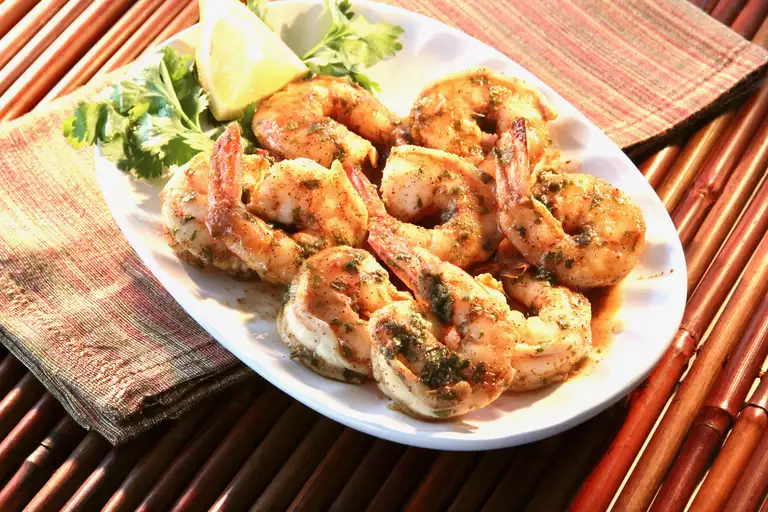

Spicy Baked Shrimp

Description
These spicy baked shrimp are made with a perfect blend of spices!
So easy and quick to make!
Ingredients
- 1/2 cup olive oil
- 2 tbsp cajun seasoning
- 2 tbsp lemon juice
- 2 tbsp chopped fresh parsley
- 1 tbsp honey
- 1 tbsp soy sauce
- 1 pinch cayenne pepper
- 1 lb uncooked shrimp
- cooking spray
Steps
- Whisk olive oil, Cajun seasoning, lemon juice, parsley, honey,
soy sauce, and cayenne pepper together in a large glass or
ceramic bowl. Add shrimp; toss to evenly coat. Cover the bowl
with plastic wrap; marinate in the refrigerator for 1 hour.
- Preheat the oven to 450 degrees F (230 degrees C). Coat a
baking dish with cooking spray.
- Transfer shrimp to the prepared baking dish; pour any remaining
marinade over top.
- Bake in the preheated oven until shrimp are bright pink on the
outside and meat is opaque, about 10 minutes.
Home